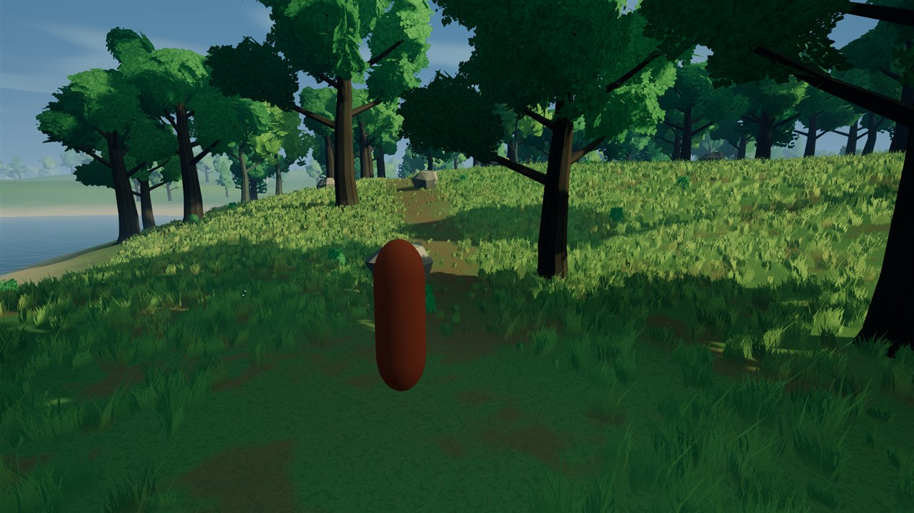
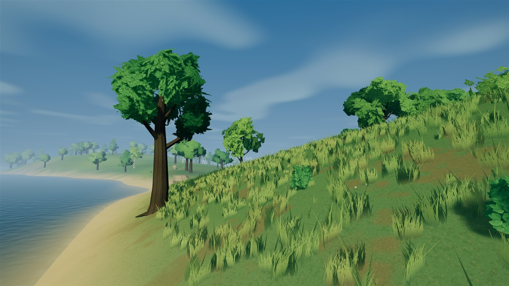
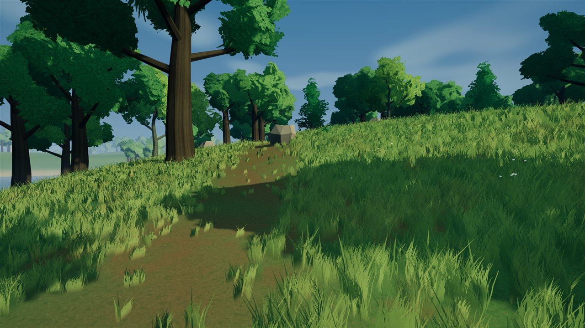
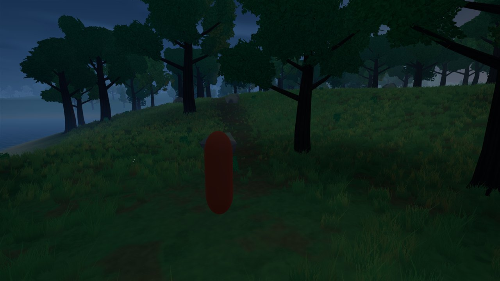
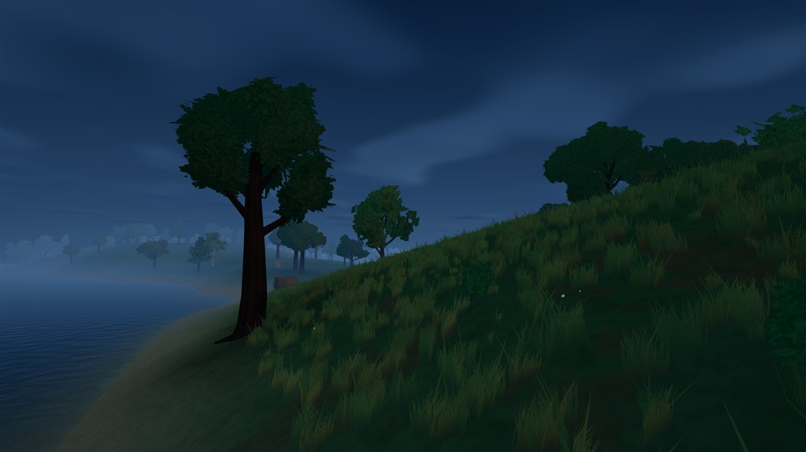
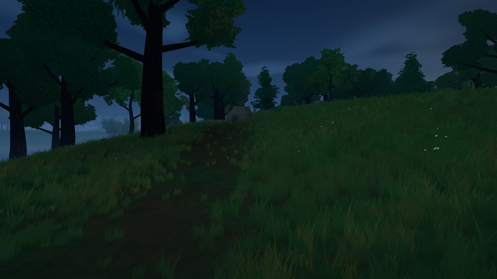
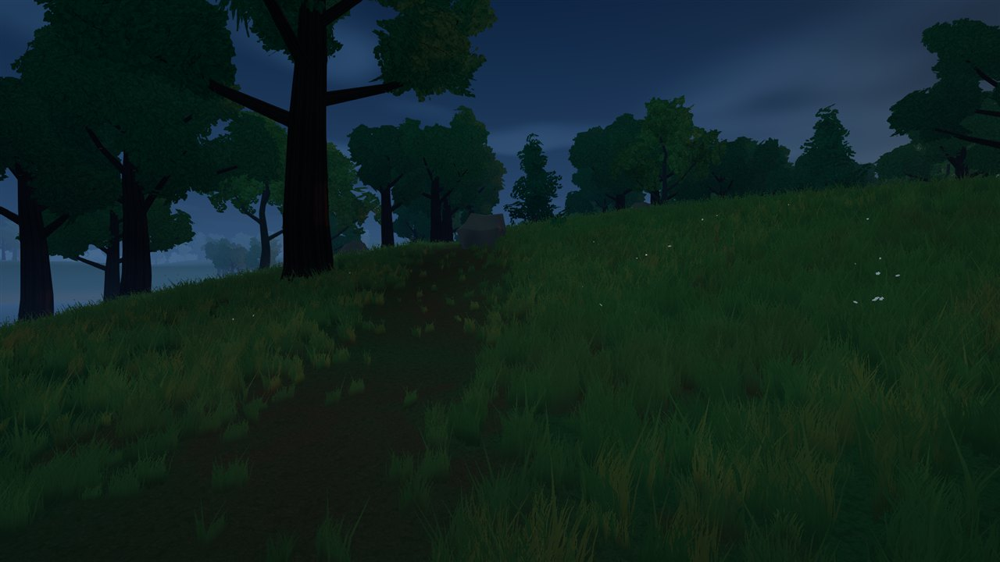

DAY / DUSK / CLEARING / SHORELINE
More variation in the ground beneath the foliage.
A modest material refinement adds variation to exposed ground and rocks while preserving the stylized low-poly shapes. Geometry, vegetation placement and density stay the same. Compare the same three views in daylight and dusk.
After images appear first. Tap any image for its full-resolution original. Desktop review of the cloud-shadow pass is complete; its subtle strength is retained while the broader scene develops. Cloud and lighting settings are unchanged here. This website contains screenshots, not a playable mobile game. Earlier grass palette and distant-forest comparisons remain available.
NORMAL GAME / GROUND AND ROCK MATERIALS
Day / ordinary player camera

NORMAL GAME / GROUND AND ROCK MATERIALS
Day / shoreline

NORMAL GAME / GROUND AND ROCK MATERIALS
Day / ground and rock inspection

NORMAL GAME / GROUND AND ROCK MATERIALS
Dusk / ordinary player camera

NORMAL GAME / GROUND AND ROCK MATERIALS
Dusk / shoreline


NORMAL GAME / GROUND AND ROCK MATERIALS
Dusk / ground and rock inspection

